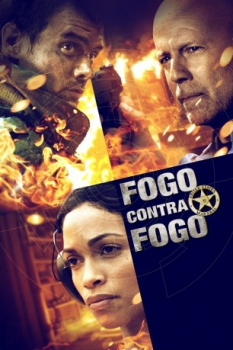

Fogo Contra Fogo (2012)


Ele era o homem errado na hora errada. Mas agora precisa fazer a coisa certa.

Avaliação (TMDb):


5.7/10 (494 votos)
Avaliação (Usuário):
Outro Título:Fire with Fire
País:United States, 97 minutos
Idiomas falados:Inglês, Português
Gênero(s):Ação, Crime, Drama, Suspense
Diretor(s):David Barrett
Codec:MPEG-2 (DVD)
Número: 1483
Sinopse:
Depois de testemunhar um assassinato o bombeiro é obrigado a entrar para o programa de proteção à testemunha. Porém o criminoso contra quem ele testemunhou é solto, com isso ele decide enfrentá-lo entrando para uma gangue rival.
Elenco:
Bruce Willis, Josh Duhamel, Rosario Dawson, Vincent D'Onofrio, 50 Cent, Richard Schiff, Vinnie Jones, James Lesure, Arie Verveen, Bonnie Somerville
Tipo de mídia: DVD5,
Legendas: Português
Alugado: Não
Tela: 2.35:1